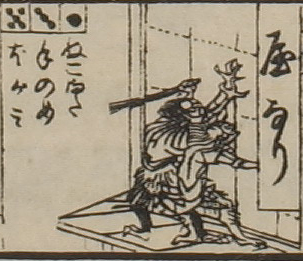

家鳴り；ヤナリ

家鳴り。2体描かれている。着物をまとっている。建物を外からゆさぶっているようである。奥の1体は左手に棒状のものを持っている。
出典：親書誌：U426_nichibunken_0082：新版妖怪飛巡雙六；シンパンヨウカイトビマハリスゴロク／日付：2007／資源識別子：U426_nichibunken_0082_0003_0000
Copyright (c)2010- International Research Center for Japanese Studies, Kyoto, Japan. All rights reserved.